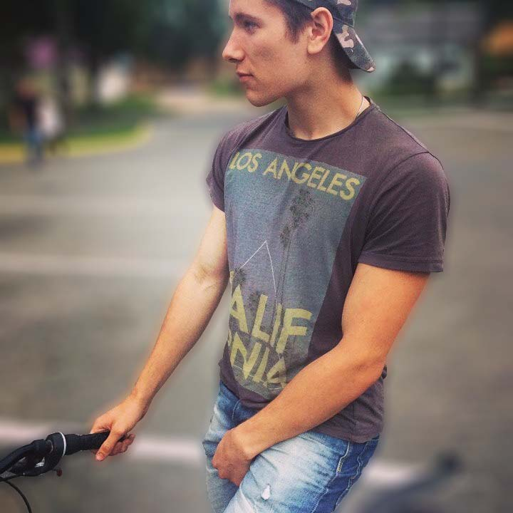

+375(29)8996221
just_kart
9369992@gmail.com

A guy who's keen on programming and cars. I like learning new stuff, making things work
I'm curious about web-design, workflows, processes, cutting-edge technologies. All this inspire me
I'm social. travelling, visiting new places, making new friends is always cool
+375(29)8996221
just_kart
9369992@gmail.com